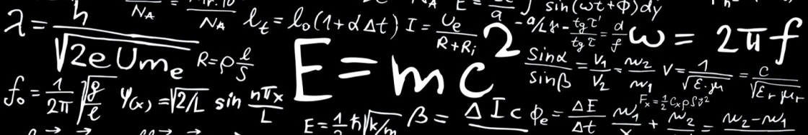

Гигорчук Данііл Дмитрович
Видатні вітчизняні та закордонні вчені-фізики.

Ісаак Ньютон

Ісаак Ньютон (1643-1727) – один з батьків класичної фізики. Обґрунтував рух планет Сонячної системи навколо Сонця, а також настання припливів і відливів. Ньютон створив фундамент для сучасної фізичної оптики. Вершиною його робіт є відомий закон всесвітнього тяжіння. Закони Ньютона являють собою основи класичної механіки. Перший закон Ньютона пояснює збереження швидкості тіла при скомпенсованих зовнішніх впливах. Другий закон Ньютона описує залежність прискорення тіла від прикладеної сили. З трьох законів Ньютона можуть бути виведені інші закони механіки. Він сформулював емпіричний закон теплообміну й побудував теорію швидкості звуку. У математиці Ньютон паралельно з Готфрідом Лейбніцом розвинув числення нескінченно малих, працював з рядами, узагальнив біном Ньютона та запропоновував метод Ньютона розв’язування нелінійних рівнянь.
Рефлектор

Рефлектор – дзеркальний телескоп, також відомий як рефлектор Ньютона. Був винайдений у 1668 році Ісааком Ньютоном. У конструкції рефлектора використовується увігнуте дзеркало, розташоване в кінці труби. Увігнуте дзеркало віддзеркалює зібране світло назад на значно менше дзеркало, яке знаходиться посередині або спереду труби. Потім маленьке дзеркало віддзеркалює світло на окуляр, який вже і надасть картинку об'єкта. Кажуть, що рефлектор показує дещо гірше, ніж рефрактор, оскільки невелика частина світла втрачається через використання маленького дзеркала посередині труби. Насправді, причина, чому рефлектори користуються дещо меншою популярністю – це якість їх конструкції. У рефлектора всього один оптичний активний елемент (дзеркало), а значить, це дзеркало має бути найвищої якості. Рефрактор же використовує систему лінз, з чого випливає, що якщо одна не буде працювати бездоганно, то це зможе виправити інша лінза. Однак цей спосіб не підходить для рефлекторів, оскільки все світло віддзеркалюється тільки одним дзеркалом. У більш дорогих моделей якість дзеркала буде краще, а розмір – більше, ніж у дешевих.
Зако́н всесві́тнього тяжі́ння
Зако́н всесві́тнього тяжі́ння — фізичний закон, що описує гравітаційну взаємодію в рамках Ньютонівської механіки. Закон стверджує, що сила притягання між двома тілами (матеріальними точками) прямо пропорційна добутку їхніх мас, і обернено пропорційна квадрату відстані між ними.Закон всесвітнього тяжіння сформулював Ісаак Ньютон у 1687 році у трактаті «Математичні начала натуральної філософії» (лат. Philosophiæ Naturalis Principia Mathematica).
Дисперсія світла
Дисперсія світла – це розкладання світла в спектр, обумовлене залежністю показника заломлення середовища від частоти світлової хвилі. Дисперсія світла є явищем розкладання променя білого світла на кольорові промені. Причиною такого розкладу є залежність швидкості світла в середовищі від частоти (довжини хвилі).Швидкість світла в середовищі: